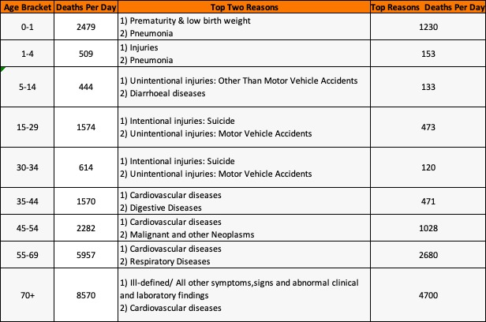
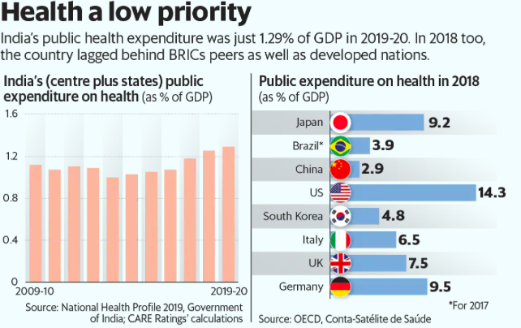
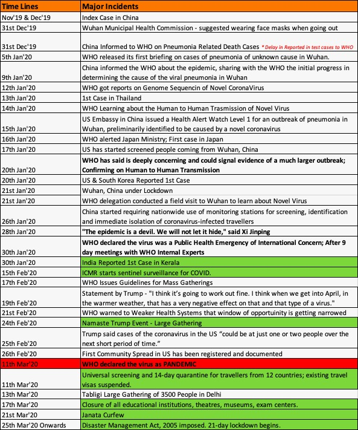
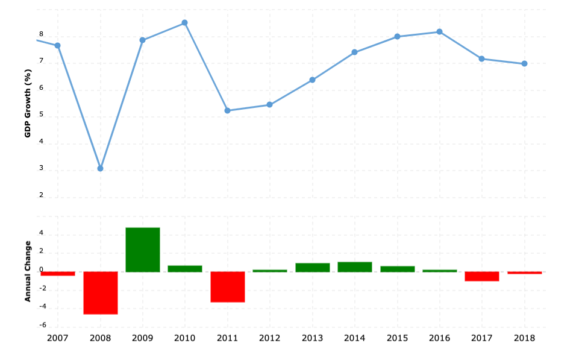
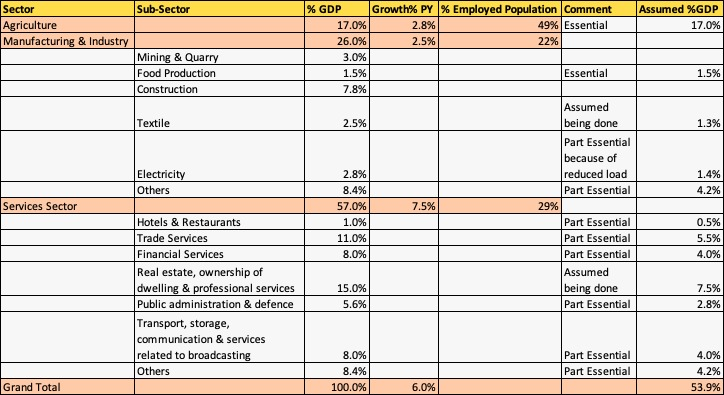
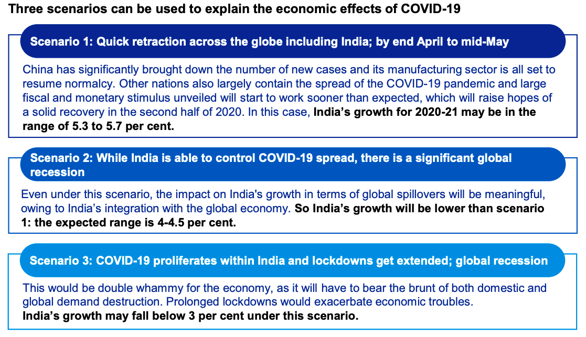
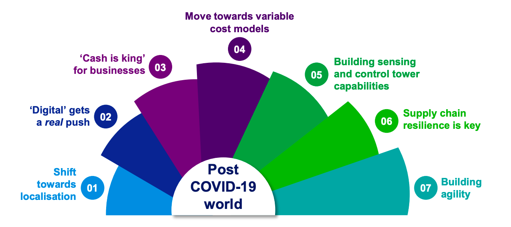
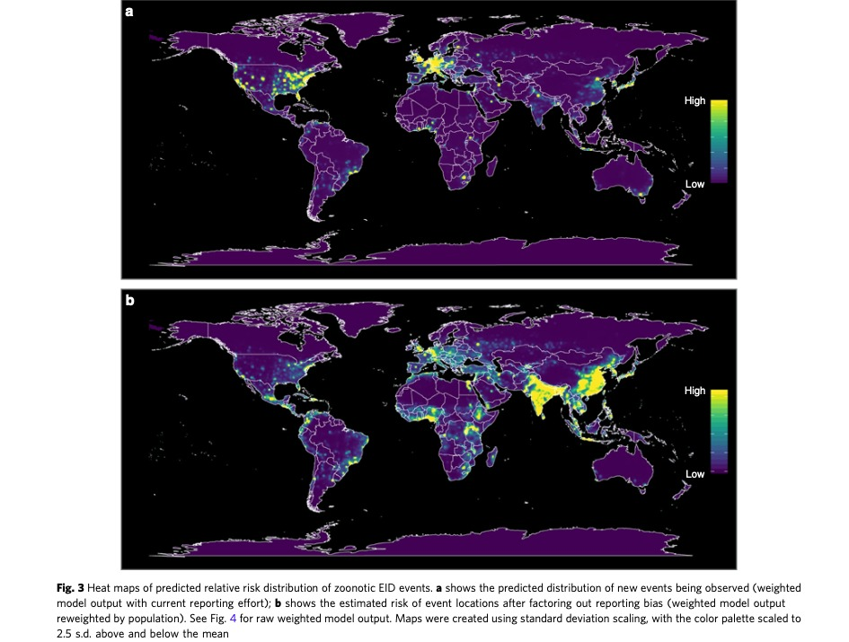

Note: This is an opinionated article especially with respect to Indian sub-continent.
The current situation puts a heavy strain to balance between lives and livelihoods. Nonetheless Indian government and respective state governments are doing their best to ease this strain in the best possible way.
Saving lives become very important because there are not just numbers and they are individuals. However, let us try to understand the gross numbers of deaths and its causes in India per Day. As per current estimate approximately 24,000 people in India die each and every day.

Note: In the sample the Income Level & Education Level is not mentioned.
The most disturbing number that i came across during this computation on excel sheet is the infant deaths due to Pneumonia is almost 300 to 400 per day. This number suggests that may be most of the people might be below or around poverty line {As the underlying reasons seems to be of lack of nutrition, hygiene and right health care at right time}; and on top of this “The Health Care Expenditure as % GDP” has not been improved much in this last decade.”

Usually “the current business as usual” the livelihoods and economy growth is already modelled and included for all the factors mentioned above.
Now a “black swan” i.e.; CoronaVirus has entered into our lives and livelihoods which seems to have disturbed and created an imbalance between the both. Let us see the major timelines across the Globe and India of Novel Corona Virus.

Even after PHEIC declaration by WHO on 30th Jan’20 only few international countries has co-ordinated and most of them didn’t which had later burnt their fingers. { I said to myself that this is time when international friends has to help each other other than business and etc;}
Seeing the India’s track record of Health Care and even the Best Health Care Countries facing upward trend of deaths; The best option and only option is for a National wide lock down. {Is the Lockdown right decision or wrong — As said by an expert on a bad case scenario there might be days where 5000 deaths per day would be possible if left as it is. So, the lock down helps to reduce the burden on the present health care system }
SO LOCK DOWN IS NECESSITY
Lockdown comes up with a huge benefit for the people and of-course reduce the limits the spread; And soon we can declare the country as Corona Free in similar fashion on how Wuhan-China which declared Corona Free on 27th April 2020.
Other side of see-saw of Lockdown is the loss of livelihoods and lesser business output and forced reduction of buying output which may trigger into recession. Since the lockdown there were numerous articles and opinions across recession and comparison with respect to great depression. However, let us try to understand in theoretical terms what is the difference between the two.
There are no standard definitions for the same { Placing the Merriam-Webster definitions here }
Recession: A recession is a downward trend in the business cycle, one that is characterised by a decline in production and employment. This trend lowers household income and spending, which consequently causes many businesses and households to delay making large investments or purchases
Depression: A depression is a major downswing (far more severe than a downward trend) in the business cycle; one which is characterised by sharply reduced industrial production, widespread unemployment, a serious decline or cessation of growth in construction, and great reductions in international trade and capital movements. Another difference between a recession and a depression, in addition to the severity and effects of each, is that recessions may be limited geographically (limited to a single country), whereas depressions (such as the Great Depression of the 1930s) can occur across many nations.
Here is the GDP Growth for the last decade which we can see that the economy is under slowdown from last two years and now comes the lockdown as well.

Good thing about the lock down is that it is not that all activities/sectors of GDP will be closed. Below is a table that might explain the possible impact as a guesstimate work.

Albeit the GDP may drop by 50% for few months the Employed Population who might not be temporary/permanently working would be 20% to 25% only { Including Migrant and Daily Wage Labourers - who might be the majority of them }
If India is a self sufficient country there is high chance of quick economic boom post the lift of lock down. However, we are not living in a just world we have trades, exchanges, forex, arbitrage, exports, imports and foreign dependant business. The good news for all of them is that it is not a structural fault in the economy so the rebound might be stronger and quicker than anticipated.
The Major Consultancies has provided a quick impact of the Indian Economy and suggested the way forward. The one which i liked is the KPMGs; Where they have displayed the three scenarios of Economy within India based on how the Government will react and consequent analysis by sector wise and suggestions.

{ Here is the link for the same - https://home.kpmg/content/dam/kpmg/in/pdf/2020/04/potential-impact-of-covid-19-on-the-Indian-economy.pdf }
To Conclude: As we learnt from previous articles that there might be future outbreaks and epidemics of similar zoonotic viruses and business and people has to embrace the new normal and build the business models considering this factor as no more an outlier.


It is great learning experience during the weekends and holidays of lockdown to learn on this corona virus pandemic. Readers will see more interesting articles in the coming weeks.
Our Earlier Blogs:
COVID 19 : FACTS & REALTY CHECK - Where I learned about this pandemic - Published on 25th March 2020
COVID 19: NETIZEN REACTIONS - Where tried to show case few examples where netizens try to forward without a fact check. - Published on 29th March 2020
COVID 19: LESSONS FROM “IN” LAND - Our Learning from Kerala - Published on 5th April 2020.
COVID 19 : MEDICAL SCIENCE TO OVERCOME PANDEMIC - My Learning on the Corona Virus on Scientific Terminology. - Published on 15th of April 2020